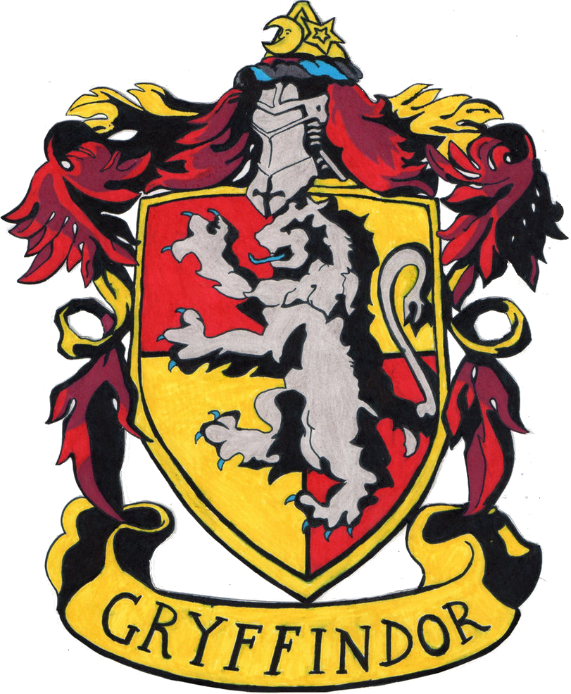
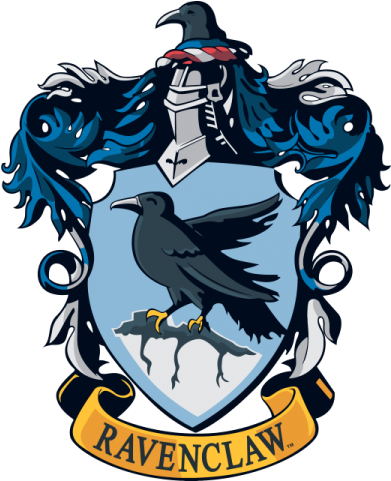

BEM VINDO (A)
Navegue pelas seções do site utilizando o menu acima
Apresentação das casas
Grifinória
(Gryffindor)
Lar dos bravos e cavalheiros, a casa que valoriza feitos de coragem e superação pessoal que costumam ser realizados por altruísmo. Seus estudantes tendem a ser bastante aventureiros, mas se destacam, sobretudo, pela lealdade. Os alunos da Grifinória podem ser imprudentes nos atos de bravura, muitas vezes por teimosia ou falta de melhor julgamento da situação — o que pode ser visto como egoísmo.
Lufa-Lufa
(Hufflepuff)

Os estudantes da Lufa-Lufa são dedicados, pacientes e honestos. Suas admiráveis características os tornam trabalhadores árduos e modestos, sendo receptivos a todos os demais tipos de bruxos. Por outro lado, o excesso dessas qualidades pode se tornar um ponto negativo: justamente por sua flexibilidade e compreensão, os alunos podem ser complacentes e muito dependentes de outras pessoas, tornando-se ingênuos.
Sonserina
(Slytherin)

Os membros da Sonserina têm como características, sobretudo, a ambição e a busca pela grandeza, por isso estão sempre se dedicando a alcançar e expandir metas e se empenhando com inteligência em diversas áreas da magia. Por outro lado, essas qualidades podem promover um senso de competição muito aflorado, o que os torna presunçosos e egoístas.
Corvinal
(Ravenclaw)
Os bruxos pertencentes à Corvinal se destacam por sua exímia inteligência. Nesse contexto, suas principais características são relacionadas a sabedoria, criatividade e personalidade única, o que garante a eles certa excentricidade. Contudo, a valorização exacerbada do academicismo pode torná-los perfeccionistas, frios, insensíveis e demasiadamente críticos em relação às outras Casas